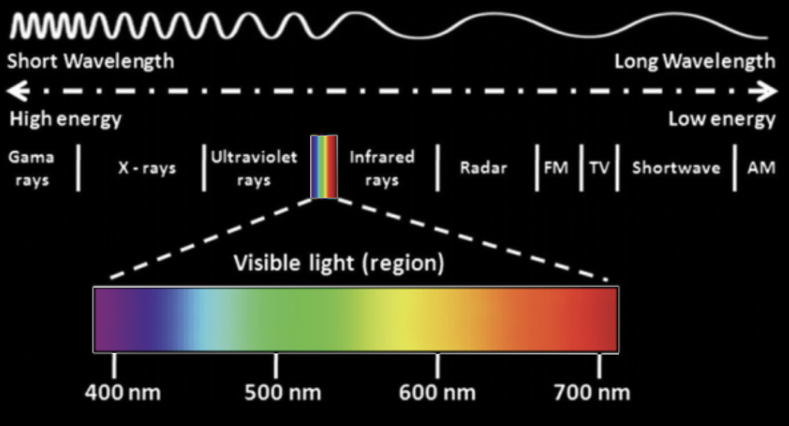

Light in the strictest sense of the word refers to electromagnetic radiation that can be perceived with the human eye. In a wider physical sense, light refers to a larger area of electromagnetic radiation which is located between microwave radiation and x-rays. Besides visible light, this definition also includes infrared light and ultraviolet radiation.
Physically, the phenomenon of light can be described with two main conceptual models: On the one hand, light obeys the laws of wave theory in wide macroscopic areas. For this reason, monochromatic light can be described fairly well as continuous electromagnetic radiation of a certain frequency and intensity. Specific frequencies or wavelengths can be assigned to the various types of light (ultraviolet, visible light, infrared, but also the individual colours). If we arrange them in the order of these wavelengths, this results in the well-known spectrum of visible light.
A different approach is based on the quantum physical properties of light. If we leave the macroscopic field, light (and other forms of electromagnetic radiation) is shown to have a discontinuous nature.
The radiant energy is not transmitted continuously – as in wave theory. On the contrary, the energy seems to be characterised by a certain granularity. Light, therefore, cannot be transmitted in slices of arbitrary size, but is transported through the transmission of tiny units. Planck was the first to discover this phenomenon, and he coined the term Planck’s constant.
By analogy to wave theory, each light quantum has a specific energy, which corresponds to its colour or wavelength. The individual light quantum is indivisible, and so monochromatic light can be shown as a multiple of such a light quantum.
Both theories have their justification and differ mainly in the standards in which they are valid. This is called wave-particle duality. Since this section of the guide only covers the microscopic area, the wave theory will mainly be used in the following.
In an even broader context, light can also be represented in a simplified ray model. Here, rays of light are formed along a connecting line between the light source and a target point to be viewed.

Speed of light can be found using the wave equation
Written by Albert Marin